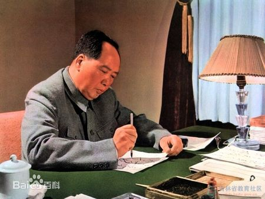

毛泽东思想是由毛泽东倡导并在二十世纪中国革命中大范围实践的一种政治、军事、发展理论，一般认为其为马列主义在中国的发展。中国共产党认可毛泽东思想是其取得新民主主义革命、抗日战争、国共内战胜利、建立中华人民共和国的重要理论。毛泽东思想中比较突出的内容有"星星之火可以燎原"、"枪杆子里出政权"、"农村包围城市"、"游击战十六字方针"、"群众路线"、"团结一切可以团结的人"、"文艺为无产阶级革命服务"、"三个世界的划分"、"继续革命理论"等等。毛泽东思想专注于将旧的制度和价值系统 击垮并摧毁，提出了一整套的战术和战略构想，这部分类似中国古代兵家和纵横家的领域，经过了历史的实践检验，已证明其行之有效。至于其思想中对中华人民共和国建设的一些理论，如"继续革命理论"，不为中国共产党官方认可，毛泽东个人晚年有关无产阶级文化大革命等明确被指为错误思想。改革开放后，中国共产党定义毛泽东思想为中国共产党第一代领导人集体智慧的结晶，而不是毛泽东个人的思想。在中国以外“毛主义”可能被理解为可与毛泽东思想混用，中国官方不曾正式使用过这个词。毛泽东并没有提出自己独立的价值系统，他只是跟随马列主义，并且反修正主义。
第一，关于新民主主义革命。
第二，关于社会主义革命和社会主义建设。
第三，关于革命军队的建设和军事战略。
第四，关于政策和策略。
第五，关于思想政治工作和文化工作。
历史特点
The social influence of Mao Zedong thought
“ 毛泽东思想产生在半殖民地半封建社会的中国，是中国革命和国际共产主义运动发展中的重要历史现象 。中国人民在它的指导下取得了伟大的胜利。因此，毛泽东思想对世界上被压迫民族的解放斗争和人类进步事业具有借鉴作用。 ”